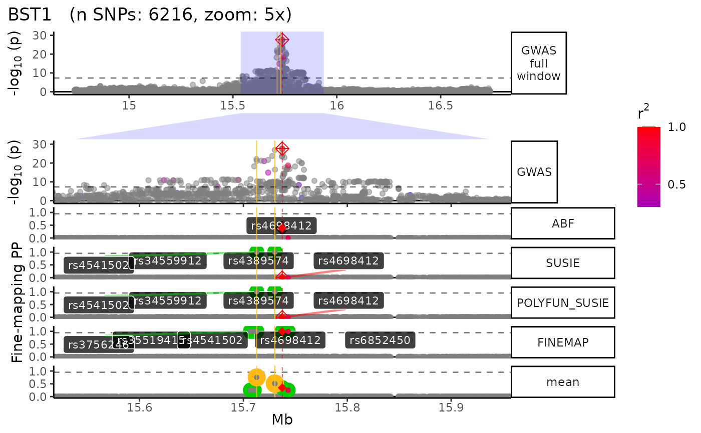

Generate a locus-specific plot with multiple selectable tracks. Users can also generate multiple zoomed in views of the plot at multiple resolutions.
PLOT.locus(
finemap_dat,
locus_dir,
LD_matrix = NULL,
LD_reference = NULL,
dataset_type = "GWAS",
color_r2 = T,
method_list = c("ABF", "FINEMAP", "SUSIE", "POLYFUN_SUSIE"),
track_order = NULL,
track_heights = NULL,
plot_full_window = T,
dot_summary = F,
QTL_prefixes = NULL,
mean.PP = T,
PP_threshold = 0.95,
consensus_threshold = 2,
sig_cutoff = 5e-08,
gene_track = T,
point_size = 1,
point_alpha = 0.6,
snp_group_lines = c("Lead", "UCS", "Consensus"),
xtext = F,
show.legend_genes = T,
XGR_libnames = NULL,
n_top_xgr = 5,
Roadmap = F,
Roadmap_query = NULL,
n_top_roadmap = 7,
annot_overlap_threshold = 5,
zoom_exceptions_str = "*full window$|zoom_polygon",
Nott_epigenome = F,
Nott_regulatory_rects = T,
Nott_show_placseq = T,
Nott_binwidth = 200,
Nott_bigwig_dir = NULL,
save_plot = T,
show_plot = T,
genomic_units = "Mb",
strip.text.y.angle = 0,
max_transcripts = 1,
plot.zoom = c("1x"),
dpi = 300,
height = 12,
width = 10,
plot_format = "jpg",
save_RDS = F,
return_list = F,
conda_env = "echoR",
nThread = 4,
verbose = T
)library(echolocatoR)
finemap_dat<- echolocatoR::BST1; LD_matrix <- echolocatoR::BST1_LD_matrix;
locus_dir <- file.path("~/Desktop","results/GWAS/Nalls23andMe_2019/BST1")
locus_plot <- PLOT.locus(finemap_dat, locus_dir=locus_dir, LD_matrix=LD_matrix, Nott_epigenome=T, xtext=F, plot.zoom=c("5x"))
#> +-------- Locus Plot: BST1--------+
#> [1] "+ Filling NAs in CS cols with 0"
#> [1] "+ Filling NAs in PP cols with 0"
#> [1] "+ LD:: LD_matrix detected. Coloring SNPs by LD with lead SNP."
#> [1] "++ PLOT:: GWAS full window track"
#> [1] "++ PLOT:: GWAS track"
#> [1] "++ PLOT:: Merged fine-mapping track"
#> [1] "Melting PP and CS from 5 fine-mapping methods"
#> Warning: The `.dots` argument of `group_by()` is deprecated as of dplyr 1.0.0.
#> This warning is displayed once every 8 hours.
#> Call `lifecycle::last_lifecycle_warnings()` to see where this warning was generated.
#> [1] "++ PLOT:: Adding Gene model track."
#> Error in dplyr::slice_max(., order_by = c(symbol, width), n = max_transcripts, :
#> Problem while computing indices.
#> ℹ The error occurred in group 1: symbol = "AC006427.2".
#> Caused by error:
#> ! `order_by` must have size 1, not size 2.
#> [1] "NOTT_2019:: Creating epigenomic histograms plot"
#> [1] "NOTT_2019:: Importing bigWig subsets from UCSC..."
#> [1] "+ Inferring genomic limits for window: 1x"
#> [1] "++ NOTT_2019:: Downloading and merging 12 peaks BED files."
#> [1] "++ NOTT_2019:: Converting merged BED files to GRanges."
#> [1] "++ NOTT_2019:: 634540 ranges retrieved."
#> 1860925 query SNP(s) detected with reference overlap.
#> [1] "+ PLOT:: Calculating max histogram height"
#> [1] "++ Converting label units to Mb..."
#> [1] "NOTT_2019:: Creating PLAC-seq interactome plot"
#> [1] "+ NOTT_2019:: Getting interactome data."
#> [1] "++ Converting to GRanges."
#> [1] "Importing Microglia interactome ..."
#> [1] "Importing Neuronal interactome ..."
#> [1] "Importing Oligo interactome ..."
#> 1403 query SNP(s) detected with reference overlap.
#> 1770 query SNP(s) detected with reference overlap.
#> Error in h(simpleError(msg, call)) :
#> error in evaluating the argument 'args' in selecting a method for function 'do.call': GRanges objects don't support [[, as.list(), lapply(), or unlist() at
#> the moment
#> [1] "+ Adding vertical lines to highlight SNP groups..."
#> +>+>+>+>+ plot.zoom = 5x +<+<+<+<+
#> [1] "+ PLOT:: Get window suffix..."
#> [1] "+ Constructing zoom polygon..."
#> [1] "+ Highlighting zoom origin..."
#> [1] "+ Removing subplot margins..."
#> [1] "+ Reordering tracks..."
#> [1] "+ Ensuring last track shows genomic units..."
#> [1] "+ Aligning xlimits for each subplot..."
#> [1] "+ Checking track heights..."
#> [1] "+ PLOT:: Saving plot ==> ~/Desktop/results/GWAS/Nalls23andMe_2019/BST1/multiview.BST1..5x.jpg"
#> Warning: ggrepel: 5 unlabeled data points (too many overlaps). Consider increasing max.overlaps
#> Warning: ggrepel: 5 unlabeled data points (too many overlaps). Consider increasing max.overlaps
#> Warning: ggrepel: 7 unlabeled data points (too many overlaps). Consider increasing max.overlaps
#> Warning: ggrepel: 7 unlabeled data points (too many overlaps). Consider increasing max.overlaps
